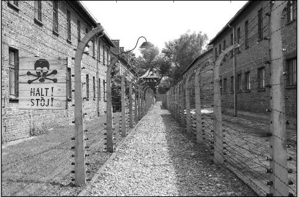

At first Scratch was hard to learn, but after messing with this different types of codes it became easy. Project Backlog is here.
My partner, Nick, decided to write his story about The California Gold Rush and the cities built in California at the time, in his U.S. History class. During this project Nick worked on the story, while I helped work on the flow chart.
My partners and I created a Harry Potter app in repl.it, the first thing me and Brandon worked on was the class houses and their questions. Austin worked on the combat system and in the end we combined both of them to make our game.
My partner and I, took a normal picture of Auschwitz and then related it to a specific quote in the book night. We chose a specific tone to changed the picture to match up with the tone of the passage. Brandon worked on the Pre Planning
Matthew Garcia and I, were given a website that gave us data, about the college acceptance rates of different ethnic groups. From there we grabbed that information to create a pie chart, that looked at the different ethnic groups attending the colleges given.